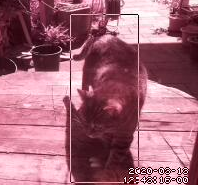

Catflap
I have two cats, and I live in an area that has lots of mice. One of my cats likes to bring live mice inside and then she hunts them indoors. Sometimes she loses interest in a mouse, or the mouse manages to hide behind the kitchen cupboards, and then I get to catch the mouse. That is not the kind of excitement I want in my life.
I could keep the cats indoors. However, these are middle-aged cats who have always been able to go outside, and giving them outdoor access was a condition of adopting them. So I have a cat flap, and the cats go in and out as they please.
Last year, I read somewhere on the internet that someone had automated their cat flap: it has a little camera, detects whether a cat is approaching, and keeps the flap closed if the cat has something in its mouth. This sounded like a fun project, so I decided to give it a go. I deliberately didn’t search for what the other person did; just knowing that this is possible seems like a good starting point.
Ingredients:
- a camera, possibly also a motion sensor
- a way to process images from the camera in close to real time
- a piece of software that can take an image from the camera and decide whether there’s a cat in it and whether the cat has something in its mouth
- a way to control the cat flap
Controlling the cat flap sounds hard. I actually already have a cat flap with a microchip reader (each cat has a microchip implanted in its neck, and the flap is programmed to open only for these two microchips; I installed this flap because neighbours’ cats were coming inside and stealing my cats’ food, which stressed my cats out no end). So I guess I could open this up and look inside and see if there’s a way to “and” the signal from the microchip reader with one from a device I create? Probably. I’ll leave this for later.
The camera
After a bit of research, I decided to go with a Raspberry Pi 3 and a matching camera module (NoIR Camera V2). I also bought a 64GB memory card because I saw that you need one with the Pi.
I picked the NoIR because I wanted to be able to capture images in poor lighting (cats like to hunt during twilight). The camera actually comes with a piece of blue plastic (the noir website refers to it as “gel”) which can be used for monitoring plant health. That is awesome, and I hope I can come up with a project for it. Don’t need it for the cats though. The camera doesn’t work in complete darkness, so I’ll also need to add an IR LED light. I haven’t done that yet.
Using the Pi with the camera like this also solves the problem of how to get pictures from the camera to a computer. I can even do OpenCV image processing right on the Pi.
I followed the documentation for installing Raspbian on the Pi. The Pi3 has a regular-sized HDMI input so I was able to use the TV as a screen and a USB keyboard and mouse during installation. Then I enabled ssh so I can connect to the pi from my laptop. This was surprisingly painless.
Then I attached the camera. You can take pictures with
raspistill bla.jpg
and then view them with
gpicview bla.jpg
There’s a bunch of sample projects out there where people have built their own security camera using a Raspberry Pi + camera, so I looked at what they did and played around with the picamera module in python.
The images were sharp but had a pink tint. This is because of the NoIR camera; I found a few settings to play with,
and e.g. -awb greyworld looked very useful. It isn’t available via the picamera module yet, but the pink-tinted
images are probably good enough.
Motion sensing
A few projects I looked at used a separate motion sensor (you can buy one for the raspberry pi), while others simply kept the camera running and used it to detect motion. Since the camera takes about 1-2s to warm up, I figured I’d have to keep the camera running anyway so might as well skip the separate motion detector.
Keeping the camera on should be fine – it takes 250mA but I’m not going to run the Pi on batteries.
I think it would be possible to run the camera yourself, take a picture n times per second, and subtract subsequent pictures from each other to detect motion. You’d want to tune this a bit depending on the size and speed of the objects you want to detect. However, it turns out there’s an open source project called Motion that does just what I want – all I had to do was to install motion and adapt a configuration file, and now I run
motion -c .motion/motion.conf &
and then I get pictures of motion events.
I basically took the distribution example file and modified it. I’ve checked my configuration into github but it’s really no big deal, the example file has a lot of useful comments and I almost didn’t need the documentation.
I set this up so it takes relatively small low-res pictures (320x240) no more than twice per second. When it detects motion,
it’ll start saving images. It groups these images into events based on time; basically, a new event starts if motion
is detected more than 60s (configurable) since the last motion. It writes jpeg files to a directory I specify, and it names them
<event>-<datetime>-<number>.jpg,
which looks like this:
08-20200311174631-01.jpg.
In this example, the filename is for the second image taken at 17:46:31 on Mar 11th, 2020 during the eighth motion event.
Image filesize is about 16K with my setup, so as long as I configure the motion detector not to trigger too often, I should be fine disk space-wise.
Motion doesn’t seem to start a new motion event count when the date changes; I think it starts a new event count only
when the motion software is restarted? It also seems to use only two digits of the event counter though. I had
situations where it wrote multiple sets of images with a 01 prefix for the same day.
Since I embed the datetime in the filename, I still got all the files, they were just harder to group.
The motion sourcecode is open, so if I find some time, maybe I’ll look into this more; in the meantime, I can work around it in my scripts.
Installing the camera
My cat flap is installed in the window of a little shed connected to the main house. This is convenient except for electricity; basically, the shed has one socket, and there’s a switch in a utility room that turns that socket on or off. I used to have just a lightbulb connected to that socket, so the switch acted as a light switch.
So I needed an extension cord and a power strip, and then some way to attach all of these securely. And then I had to attach the raspberry pi and the camera close to the window, angled so the camera gets a good shot of cats coming towards the flap. The pi’s camera cable is not long (10cm maybe?). I expected that I’d need to make adjustments, so I didn’t want to fix the pi and camera in place for good just yet, but I also didn’t want the cats to start playing with the camera cable, sit on the pi, etc.
Luckily, the pi’s board has four pre-drilled holes in the corners, and so does the camera. So I threaded some twine through those and hung the pi and camera from a grille in the ceiling. This looks a bit odd:

You can see the pi and camera hanging from the ceiling; the pi also has a USB power cord connected to a power strip just above the window.
The spot where I have the camera pointed is quite nice for observing the old table that the cats walk across to get to the flap. In my samples, motion is typically detected when a cat jumps onto the table, and this gives me a good view of the cat’s face. In the country where I live, it’s also important that the camera is not pointed outside my property.
Wifi signal is good enough in the shed for the Pi to connect. This is not a strict necessity, but it’s nice to be able to login to the Pi from elsewhere in the house. This allows me to stream the video from the camera on a basic http server (this comes with Motion). The Pi is only visible inside my home network; if I wanted to stream this on the internet, I’d use a different setup.
Cats going out or coming in trigger the motion sensor reliably. I have had a few false positives; one I’m pretty sure was due to a helicopter flying overhead, which rattled both the grille that the pi is suspended from and the window that it looks out of. One I think was a leaf being blown across the table. I guess it would be possible to filter those out, but they were rare enough that it doesn’t seem like a high-priority thing to fix right now.
Processing images
The Motion software optionally draws a box around the area where it detected motion. In my experiments, it always drew the box where the cat was (good), but the box does not always cover the whole cat (I guess because it only looks at pixel differences between subsequent images and it draws a box around the largest region with changes?), but that should be fine, I can just use the box as a hint for finding the cat in the picture.
I want to use OpenCV for some processing of the image, at least at first. I should be able to do some basic object detection and outlining, and then send candidate images to a better processor (probably a machine learning model) to ask it “is this a cat”, “is the cat’s face visible”, and “does this cat have something in its mouth”.
I’m using OpenCV with Python right now for rapid development, though I expect it would be faster (and maybe consume less electricity) if I used C++. I’ll make that decision once I know how much OpenCV I even need, and how much I can rely on machine learning.
You can just install OpenCV using pip3 install opencv-python. I’d recommend using pipenv just to keep your installations
separate. I couldn’t get the conda opencv module to show me images (missing gtk+ support). If you want OpenCV 4, as of
now, you need to compile it yourself.
I followed these excellent installation instructions. Compiling opencv 4 from source on the Pi took the better part of an afternoon. I used just
make rather than make -j4 because of bad prior experiences; maybe that was too cautious of me. The instructions
include a virtualenv wrapper.
Then I wrote a little Python script that lists the motion events for a given day and lets me step through the images for an event; I used opencv to show the images because I plan to use this as the basis for playing with image processing settings.
Machine learning
Here are two pictures of cats walking towards the flap:

I need to distinguish four types of images:
- No cat
- Cat from behind
- Cat facing flap but without prey
- Cat facing flap, carrying prey
Categories 1-3 could be treated as the same, it’s really only important to distinguish category 4 from everything else. However, it would be nice if I could pre-process images to narrow the samples I send to a machine learning model down to categories 3 and 4. I expect I could have a heuristic for “cat coming towards flap” based on where the motion is detected in subsequent images. That should also help with locating the cat’s head (my cats don’t typically walk towards the cat flap backwards).
Images in category four are the rarest (I expect to get 2-4 images/day of a cat entering, but only about 1/week of a cat entering with prey). This means I can’t train a machine learning model from scratch with only images I capture. I just wouldn’t have enough samples. Even if I “expand” my training set by modifying the images I have (rotate, change lighting, smudge, mirror), I don’t think I’ll have enough data.
However, there are a number of image recognition models available on tensorflow hub, and I wonder if I could use transfer learning to adapt one of them? That’s definitely the next thing to try, and it looks like there are already handy colab notebooks for that purpose.